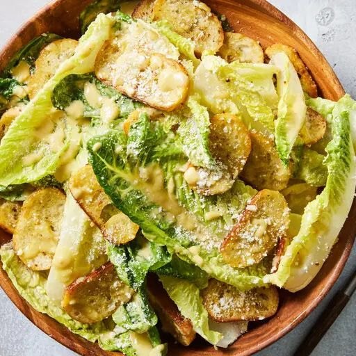

Caesar Salad

Description
The Caesar salad on the menu today at Caesar's in Tijuana,
Mexico, is but a distant cousin of the original version first
served there 100 years ago. It is believed to have included a
whole coddled egg, lemon juice and Worcestershire sauce, and
did not include anchovies. But Javier Plascencia and his
family, who have been running Caesar's for more than a decade,
consider this iteration the best one yet. Romaine lettuce is
coated in a creamy, intensely pungent dressing seasoned with
anchovies, Dijon mustard, Worcestershire sauce and freshly
squeezed lime juice. Garlicky, baked baguette croutons provide
serious crunch. A few rules elevate a good Caesar salad to a
great one: The leaves must be whole, crisp and cold; croutons
must be sliced, not diced; and Parmesan must be applied
generously. - Pati Jinich
Source:
Caesar's Caesar Salad
from NY Times Cooking.
Ingredients
- 1 large head romaine lettuce (about 1 pound)
- 1 large egg
- 4 to 6 anchovy fillets, minced
- 1 large garlic clove, minced
- 3/4 teaspoon Dijon mustard
- 2 tablespoons freshly squeezed lime juice
- 1 1/2 teaspoons Worcestershire sauce
- 1/4 teaspoon kosher salt
- 1/2 teaspoon coarsely ground black pepper
- 1/2 cup extra-virgin olive oil
- 1/4 cup finely grated Parmesan, plus more for garnish
- 1/4 cup olive oil
- 4 garlic cloves, minced
- 20 thin baguette slices (each about 1/4-inch thick)
Steps
-
Crisp the romaine lettuce: Trim and discard the base, then separate
the leaves, rinse them in cold water and drain. Spread them out on two
clean kitchen towels (or paper towels), gently roll them up and
refrigerate them for at least an hour.
-
Make the croutons: In a small bowl, mix the olive oil and the garlic
until well combined. Heat the oven to 375 degrees and set a rack in the
middle.
-
Place the baguette slices on a large baking sheet in a single layer.
Generously brush the tops with the garlic oil, then swipe the slices
around the pan to make sure their sides underneath soak up the olive oil
mixture that soaks through to the bottom. Toast in the oven for 13 to 15
minutes, turning halfway through, until browned and crunchy. Set
aside.
-
While the bread toasts, in a small saucepan, bring water to a boil
over medium-high heat. Using a slotted spoon, gently lower the egg into
the water, release it and let it cook for 1 minute. Remove with the
slotted spoon and set aside to cool.
-
In a large wooden bowl, using the back of a soup spoon, mash the
anchovies with the garlic, mustard, lime juice and Worcestershire sauce,
pressing the mixture against the bowl in circular motions, mixing it
well until it thickens and turns into a creamy paste. Cracked the cooled
egg into a separate bowl, and add the yolk to the wooden bowl,
discarding the egg white. Using a fork or a whisk, mix thoroughly to
combine. Add the salt and pepper and mix well. Slowly, pour in the ½ cup
olive oil, whisking vigorously to emulsify the dressing as you do. Add
the grated Parmesan and continue mixing until very thickened.
-
Add the cold lettuce leaves and, using tongs or your hands, toss to
coat with the dressing. Serve on a couple of plates. Smear the croutons
into the remaining dressing in the bowl and tuck them into the lettuce,
including a few on top. Add more Parmesan to taste and serve
immediately.